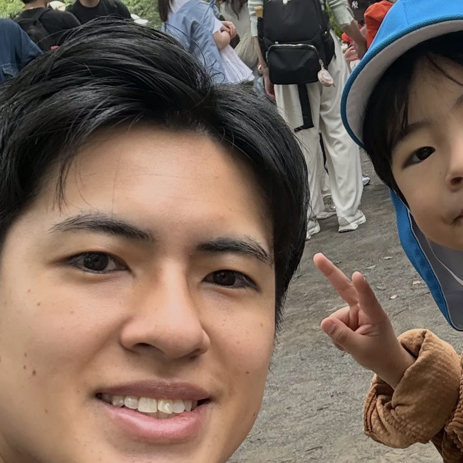

株式会社ライトアップ 経営コンサルチーム
助成金申請フロー ／ セミナー

BACKYARD × SEMINAR
SUGIYAMA MASAKATSU
バックヤードが、
長いほうの人間です。
MY MISSION
新卒からずっとライトアップにいます。約12年になりました。やってきたのは、営業、セミナー講師、カスタマーサポート、そして助成金申請のフローづくりです。
並べてみると散らかって見えますが、バックヤードが長めの人間です。お客様の前に立つ仕事もしてきましたが、そのうしろで手順を整える時間のほうが長かったと思います。
地方セミナーでは、中国地方、北陸地方、沖縄を担当していました。土地ごとに、集まる方の顔ぶれも、刺さる言い方も違います。
生まれは東京都足立区です。
休みの日は、6歳の息子と遊んでいます。
菜園の隣にビオトープもあります。メダカとタニシとエビがいます。
ベランダでできることを、まだ探しています。ベランダで育てているのは、サクランボ、シャインマスカット、ミニトマト、しそ、ハーブ、ハラペーニョです。気づけば食べられるものばかりになっていました。
商談で間が空いたときは、このあたりを振ってください。だいたい話が伸びます。
表に立つ仕事も、裏で手順を整える仕事も、どちらも長くやってきました。
助成金申請のフローづくりをしてきました。担当者が迷わず進める形に落とすのが、いちばん長くやってきた仕事です。
セミナー講師として、中国地方・北陸地方・沖縄を担当してきました。土地ごとに集まる方の顔ぶれが違うので、話す順番もそのつど変えています。
カスタマーサポートもやってきました。売って終わりではなく、そのあとで何が起きるかを見てきた側です。
手順まわりの相談であれば、いくらでもお付き合いします。
株式会社ライトアップ 経営コンサルチーム
杉山 正勝（すぎやま まさかつ）